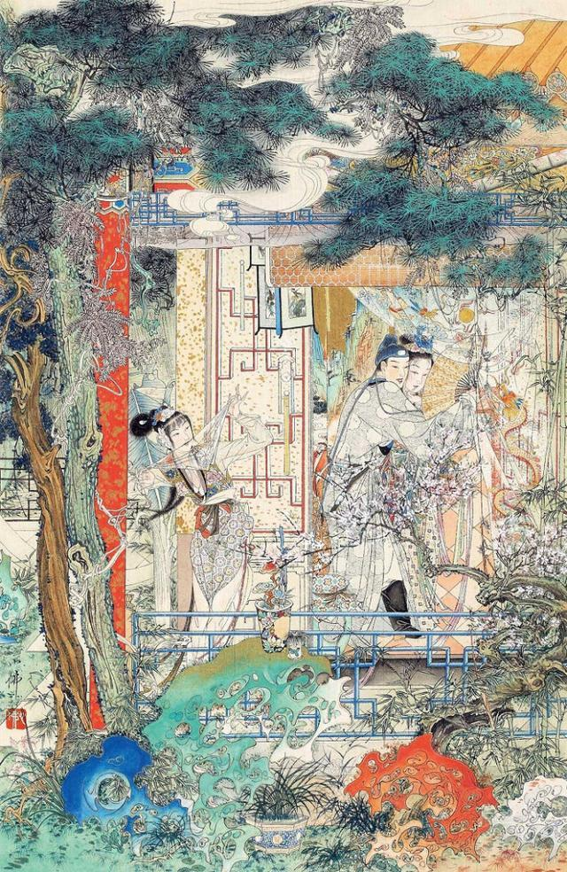

第六回 何九受贿瞒天 王婆帮闲遇雨#

词曰：
别后谁知珠分玉剖。忘海誓山盟天共久，偶恋着山鸡，辄弃鸾俦。
从此箫郎泪暗流，过秦楼几空回首。纵新人胜旧，也应须一别，洒泪登舟。
却说西门庆去了。到天大明，王婆拿银子买了棺材冥器，又买些香烛纸钱之类，归来就于武大灵前点起一盏随身灯。邻舍街坊都来看望，那妇人虚掩着粉脸假哭。众街坊问道：“大郎得何病患便死了？”那婆娘答道：“因害心疼，不想一日日越重了，看看不能够好。不幸昨夜三更鼓死了，好是苦也！”又哽哽咽咽假哭起来。众邻舍明知道此人死的不明，不好只顾问他。众人尽劝道：“死是死了，活的自要安稳过。娘子省烦恼，天气暄热。”那妇人只得假意儿谢了，众人各自散去。王婆抬了棺材来，去请仵作团头何九。但是入殓用的都买了，并家里一应物件也都买了。就于报恩寺叫了两个禅和子，晚夕伴灵拜忏。不多时，何九先拨了几个火家整顿。
且说何九到巳牌时分，慢慢的走来，到紫石街巷口，迎见西门庆。叫道：“老九何往？”何九答道：“小人只去前面殓这卖炊饼的武大郎尸首。”西门庆道：“且停一步说话。”何九跟着西门庆，来到转角头一个小酒店里，坐下在阁儿内。西门庆道：“老九请上坐。”何九道：“小人是何等人，敢对大官人一处坐的！”西门庆道：“老九何故见外？且请坐。”二人让了一回，坐下。西门庆吩咐酒保：“取瓶好酒来。”酒保一面铺下菜蔬果品按酒之类，一面烫上酒来。何九心中疑忌，想道：“西门庆自来不曾和我吃酒，今日这杯酒必有蹊跷。”两个饮够多时，只见西门庆向袖子里摸出一锭雪花银子，放在面前说道：“老九休嫌轻微，明日另有酬谢。”何九叉手道：“小人无半点效力之处，如何敢受大官人见赐银两！若是大官人有使令，小人也不敢辞。”西门庆道：“老九休要见外，请收过了。”何九道：“大官人便说不妨。”西门庆道：“别无甚事。少刻他家自有些辛苦钱。只是如今殓武大的尸首，凡百事周全，一床锦被遮盖则个。”何九道：“我道何事！这些小事，有甚打紧，如何敢受大官人银两？”西门庆道：“你若不受时，便是推却。”何九自来惧西门庆是个把持官府的人，只得收了银子。又吃了几杯酒，西门庆呼酒保来：“记了帐目，明日来我铺子内支钱。”两个下楼，一面出了店门。临行，西门庆道：“老九是必记心，不可泄漏。改日另有补报。”吩咐罢，一直去了。
何九接了银子，自忖道：“其中缘故那却是不须提起的了。只是这银子，恐怕武二来家有说话，留着倒是个见证。”一面又忖道：“这两日倒要些银子搅缠，且落得用了，到其间再做理会便了。”于是一直到武大门首。只见那几个火家正在门首伺候。王婆也等的心里火发。何九一到，便间火家：“这武大是甚病死了？”火家道：“他家说害心疼病死了。”何九入门，揭起帘子进来。王婆接着道：“久等多时了，阴阳也来了半日，老九如何这咱才来？”何九道：“便是有些小事绊住了脚，来迟了一步。”只见那妇人穿着一件素淡衣裳，白布鬏髻，从里面假哭出来。何九道：“娘子省烦恼，大郎已是归天去了。”那妇人虚掩着泪眼道：“说不得的苦！我夫心疼病症，几个日子便把命丢了。撇得奴好苦！”这何九一面上上下下看了婆娘的模样，心里暗道：“我从来只听得人说武大娘子，不曾认得他。原来武大郎讨得这个老婆在屋里。西门庆这十两银子使着了！”一面走向灵前，看武大尸首。阴阳宣念经毕，揭起千秋幡，扯开白绢，定睛看时，见武大指甲青，唇口紫，面皮黄，眼皆突出，就知是中恶。旁边那两个火家说道：“怎的脸也紫了，口唇上有牙痕，口中出血？”何九道：“休得胡说！两日天气十分炎热，如何不走动些！”一面七手八脚葫芦提殓了，装入棺材内，两下用长命钉钉了。王婆一力撺掇，拿出一吊钱来与何九，打发众火家去了，就问：“几时出去？”王婆道：“大娘子说只三日便出殡，城外烧化。”何九也便起身。那妇人当夜摆着酒请人，第二日请四个僧念经。第三日早五更，众火家都来扛抬棺材，也有几个邻舍街坊，吊孝相送。那妇人带上孝，坐了一乘轿子，一路上口内假哭“养家人”。来到城外化人场上，便教举火烧化棺材。不一时烧得干干净净，把骨殖撒在池子里，原来斋堂管待，一应都是西门庆出钱整顿。
那妇人归到家中，楼上设个灵牌，上写“亡夫武大郎之灵”。灵床子前点一盏琉璃灯，里面贴些经幡钱纸、金银锭之类。那日却和西门庆做一处，打发王婆家去，二人在楼上任意纵横取乐，不比先前在王婆家茶房里，只是偷鸡盗狗之欢。如今武大已死，家中无人，两个肆意停眠整宿。初时西门庆恐邻舍瞧破，先到王婆那边坐一回，落后带着小厮竟从妇人家后门而入。自此和妇人情沾意密，常时三五夜不归去，把家中大小丢得七颠八倒，都不欢喜。正是：
色胆如天不自由，情深意密两绸缪。贪欢不管生和死，溺爱谁将身体修。
只为恩深情郁郁，多因爱阔恨悠悠。要将吴越冤仇解，地老天荒难歇休。
光阴迅速，日月如梭，西门庆刮剌那妇人将两月有余。一日，将近端阳佳节，但见：
绿杨袅袅垂丝碧，海榴点点胭脂赤。微微风动幔，飒飒凉侵扇。处处过端阳，家家共举觞。
却说西门庆自岳庙上回来，到王婆茶坊里坐下。那婆子连忙点一盏茶来，便问：“大官人往那里来？怎的不过去看看大娘子？”西门庆道：“今日往庙上走走。大节间记挂着，来看看六姐。”婆子道：“今日他娘潘妈妈在这里，怕还未去哩。等我过去看看，回大官人。”这婆子走过妇人后门看时，妇人正陪潘妈妈在房里吃酒，见婆子来，连忙让坐。妇人笑道：“干娘来得正好，请陪俺娘且吃个进门盏儿，到明日养个好娃娃！”婆子笑道：“老身又没有老伴儿，那里得养出来？你年小少壮，正好养哩！”妇人道：“常言小花不结老花儿结。”婆子便看着潘妈妈嘈道：“你看你女儿，这等伤我，说我是老花子。到明日还用着我老花子哩！”说罢，潘妈道：“他从小是这等快嘴，干娘休要和他一般见识。”王婆道：“你家这姐姐，端的百伶百俐，不枉了好个妇女。到明日，不知什么有福的人受的他起。”潘妈妈道：“干娘既是撮合山，全靠干娘作成则个！”一面安下钟箸，妇人斟酒在他面前。婆子一连陪了几杯酒，吃得脸红红的，又怕西门庆在那边等候，连忙丢了个眼色与妇人，告辞归家。妇人知西门庆来了，因一力撺掇他娘起身去了。将房中收拾干净，烧些异香，从新把娘吃的残馔撇去，另安排一席齐整酒肴预备。
西门庆从后门过来，妇人接着到房中，道个万福坐下。原来妇人自从武大死后，怎肯带孝！把武大灵牌丢在一边，用一张白纸蒙着，羹饭也不揪采。每日只是浓妆艳抹，穿颜色衣服，打扮娇样。因见西门庆两日不来，就骂：“负心的贼，如何撇闪了奴，又往那家另续上心甜的了？把奴冷丢，不来揪采。”西门庆道：“这两日有些事，今日往庙上去，替你置了些首饰珠翠衣服之类。”那妇人满心欢喜。西门庆一面唤过小厮玳安来，毡包内取出，一件件把与妇人。妇人方才拜谢收了。小女迎儿，寻常被妇人打怕的，以此不瞒他，令他拿茶与西门庆吃。一面妇人安放桌儿，陪西门庆吃茶。西门庆道：“你不消费心，我已与了干娘银子买东西去了。大节间，正要和你坐一坐。”妇人道：“此是待俺娘的，奴存下这桌整菜儿。等到干娘买来，且有一回耽搁，咱且吃着。”妇人陪西门庆脸儿相贴，腿儿相压，并肩一处饮酒。
且说婆子提着个篮儿，走到街上打酒买肉。那时正值五月初旬天气，大雨时行。只见红日当天，忽被黑云遮掩，俄而大雨倾盆。但见：
乌云生四野，黑雾锁长空。刷剌剌漫空障日飞来，一点点击得芭蕉声碎。狂风相助，侵天老桧掀翻；霹雳交加，泰华嵩乔震动。洗炎驱暑，润泽田苗，正是：江淮河济添新水，翠竹红榴洗濯清。
那婆子正打了一瓶酒，买了一篮菜蔬果品之类，在街上遇见这大雨，慌忙躲在人家房檐下，用手帕裹着头，把衣服都淋湿了。等了一歇，那雨脚慢了些，大步云飞来家。进入门来，把酒肉放在厨房下，走进房来，看妇人和西门庆饮酒，笑嘻嘻道：“大官人和大娘子好饮酒！你看把婆子身上衣服都淋湿了，到明日就教大官人赔我！”西门庆道：“你看老婆子，就是个赖精。”婆子道：“也不是赖精，大官人少不得赔我一匹大海青。”妇人道：“干娘，你且饮盏热酒儿。”那婆子陪着饮了三杯，说道：“老身往厨下烘衣裳去也。”一面走到厨下，把衣服烘干，那鸡鹅嗄饭切割安排停当，用盘碟盛了果品之类，都摆在房中，烫上酒来。西门庆与妇人重斟美酒，交杯叠股而饮。西门庆饮酒中间，看见妇人壁上挂着一面琵琶，便道：“久闻你善弹，今日好夕弹个曲儿我下酒。”妇人笑道：“奴自幼粗学一两句，不十分好，你却休要笑耻。”西门庆一面取下琵琶来，搂妇人在怀，看着他放在膝儿上，轻舒玉笋，款弄冰弦，慢慢弹着，低声唱道：
冠儿不带懒梳妆，髻挽青丝云鬓光，金钗斜插在乌云上。唤梅香，开笼箱，穿一套素缟衣裳，打扮的是西施模样。出绣房，梅香，你与我卷起帘儿，烧一炷儿夜香。
西门庆听了，欢喜的没入脚处，一手搂过妇人粉颈来，就亲了个嘴，称夸道：“谁知姐姐有这段儿聪明！就是小人在构栏三街两巷相交唱的，也没你这手好弹唱！”妇人笑道：“蒙官人抬举，奴今日与你百依百顺，是必过后休忘了奴家。”西门庆一面捧着他香腮，说道：“我怎肯忘了姐姐！”两个［歹带］雨尤云，调笑玩耍。少顷，西门庆又脱下他一只绣花鞋儿，擎在手内，放一小杯酒在内，吃鞋杯耍子。妇人道：“奴家好小脚儿，你休要笑话。”不一时，二人吃得酒浓，掩闭了房门，解衣上床玩耍。王婆把大门顶着，和迎儿在厨房中坐地。二人在房内颠鸾倒凤，似水如鱼。那妇人枕边风月，比娼妓尤甚，百般奉承。西门庆亦施逞枪法打动。两个女貌郎才，俱在妙龄之际。
寂静兰房簟枕凉，佳人才子意何长。方才枕上浇红烛，忽又偷来火隔墙。
粉蝶探香花萼颤，蜻蜓戏水往来狂。情浓乐极犹余兴，珍重檀郎莫相忘。
当日西门庆在妇人家盘桓至晚，欲回家，留了几两散碎银子与妇人做盘缠。妇人再三挽留不住。西门庆带上眼罩，出门去了。妇人下了帘子，关上大门，又和王婆吃了一回酒，才散。正是：
倚门相送刘郎去，烟水桃花去路迷。